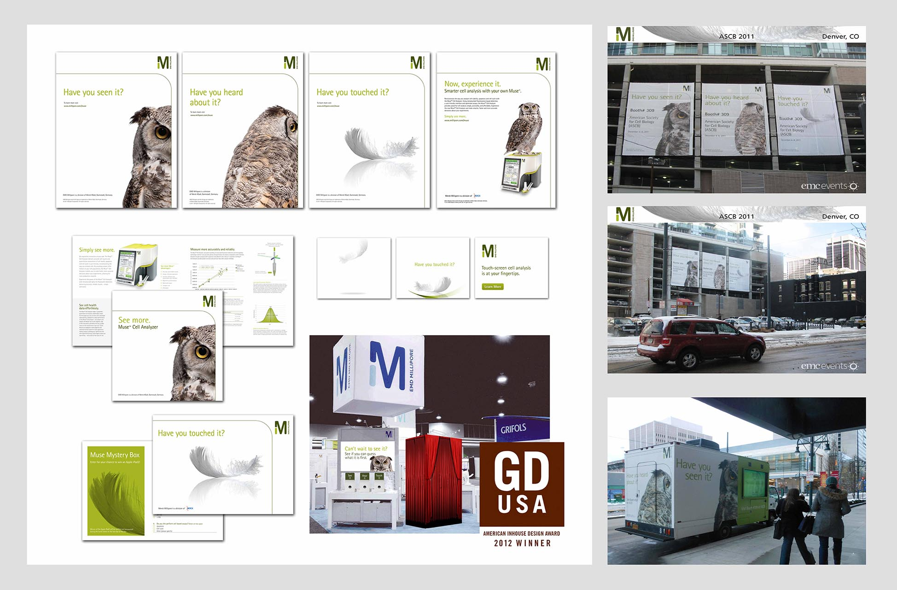

Case Studies
What I've designed recently
Schalmont Central Schools PTO
Building a community hub for 4 schools and 2,000+ students.
Designed and developed a full-featured multi-school platform — centralizing events, news, and volunteer resources for a 2,000+ student community.
4
Schools served
2,000+
Students reached

Charter Spectrum
Redesigning Spectrum's SMB web platform to reach millions.
Led the full redesign of Spectrum Business — restructuring information architecture, improving SEO, and crafting a conversion-focused UI within an enterprise AEM environment.
Millions
Users impacted
Enterprise
Scale platform

Human Care Systems
0-to-1 design of an award-winning telenursing platform.
From blank canvas to GDUSA award-winner — led end-to-end UX/UI design for Resilix, a telenursing platform built to connect patients with care from anywhere.
GDUSA
2019 Award Winner
0→1
Full product launch

Merck Millipore
Multi-channel campaign creative for a global life sciences leader.
Designed digital ads, print collateral, and brand-aligned marketing systems across 10+ campaigns for Merck's life sciences division — reaching a global scientific audience.
10+
Campaigns delivered
Global
Audience reach
